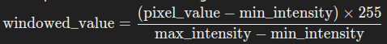

Assignments (Py02)
Problem 1: Patient Monitoring and Alert System
Hard
Scenario:
A hospital has a patient monitoring system that tracks the vital signs of patients in the intensive care unit (ICU). Each patient’s heart rate is recorded every minute and stored in an array. The array for each patient contains the heart rate data for the last 24 hours (1440 minutes). The hospital wants to implement an alert system that detects potential issues based on abnormal heart rate patterns.
Problem Statement:
Write a program that takes in the heart rate data for a patient as an array of 1440 integers and checks for the following:
1. Tachycardia Alert: If the heart rate exceeds 100 bpm for 15 consecutive minutes or more, raise a Tachycardia alert.
2. Bradycardia Alert: If the heart rate drops below 60 bpm for 10 consecutive minutes or more, raise a Bradycardia alert.
The program should output a list of times (in minutes from the start of the 24-hour period) where alerts were triggered.
Array Usage:
- The heart rate data is stored in an array of integers.
- The program uses the array to check for consecutive abnormal values and raises alerts accordingly.
- url = "https://raw.githubusercontent.com/stawiskm/pythoncourse/student/Assignments/Data/heart_rate_data.csv"
# Example usage (dummy data)
# read in the heart rate data csv file as array of integers
heart_rate_data = np.genfromtxt('Data/heart_rate_data.csv', delimiter=',')
# Run the function
alerts = check_heart_rate(heart_rate_data)
print(alerts) # Print the detected alerts
# {'Tachycardia': [(47, 65, 19), (234, 248, 15), (315, 329, 15), (404, 439, 36)], 'Bradycardia': [(990, 1001, 12), (1090, 1100, 11), (1166, 1179, 14), (1374, 1388, 15)]}
If you stop here, and code this function, by yourself, you will learn a lot. (HARD)
---
Medium
To solve the problem more efficiently using array functions and reduce the number of iterations, follow these steps:
1. Identify Consecutive Segments
- Use a sliding window or filtering technique to find segments of the array where the heart rate is consistently above 100 bpm or below 60 bpm.
- For each value in the array, you can create a binary mask (an array of 0s and 1s), where:
- 1 indicates the heart rate exceeds 100 bpm (for Tachycardia) or drops below 60 bpm (for Bradycardia).
- 0 indicates normal heart rate.
2. Find Runs of 1s
- Use array operations to identify consecutive runs of 1s in the binary mask.
- This can be achieved by using functions that help detect the start and end of each run, such as
diff,cumsum, or by combining conditions.
3. Filter Based on Length
- Once you have the segments where the heart rate is consistently abnormal, filter these segments by their length:
- For Tachycardia, only keep segments where the length is 15 minutes or more.
- For Bradycardia, only keep segments where the length is 10 minutes or more.
- The length of a segment is determined by counting the consecutive 1s.
4. Extract Start and End Times
- For each valid segment that meets the length criteria, calculate the start and end times.
- Use the indices of the start and end of the segments to determine the exact times (in minutes from the start of the 24-hour period).
5. Output the Alerts
- Compile the start and end times of all valid Tachycardia and Bradycardia alerts into a list.
- Return or print this list.
Efficiency Considerations
- By converting the heart rate data into binary masks and then using array operations to detect and filter segments, you minimize the need for explicit loops.
- This approach leverages vectorized operations that are typically more efficient than manual iteration, especially for large datasets like a 1440-element array.
Summary of Steps Using Array Functions
- Create binary masks for abnormal heart rates.
- Identify consecutive runs of abnormal values using array operations.
- Filter these runs by duration to determine valid alerts.
- Calculate and store the times of these alerts.
- Return the results in a structured format.
If you stop here, and code this function, with the help of the instructions above, you still learn a lot. (MEDIUM)
---
Easy
Fill the TODOs in the code below to complete the function.
Here's the dummy Python code that outlines the process using array functions to minimize iterations:
import numpy as np
def check_heart_rate(heart_rate_data):
# Step 1: Create binary masks
tachy_mask = #TODO # Mask for Tachycardia
brady_mask = #TODO # Mask for Bradycardia
# Step 2: Identify consecutive runs of abnormal values
# Calculate differences to find the start and end of runs
tachy_diff = #TODO # Calculate diff for Tachycardia
brady_diff = #TODO # Calculate diff for Bradycardia
# Find the indices where runs start and end
tachy_start_indices = np.where(tachy_diff == 1)[0]
tachy_end_indices = np.where(tachy_diff == -1)[0] - 1
brady_start_indices = #TODO
brady_end_indices = #TODO
# Step 3: Filter by length of runs
tachy_alerts = []
brady_alerts = []
for start, end in zip(tachy_start_indices, tachy_end_indices):
lenght = end - start + 1
if lenght >= 15: # Check if the run is 15 minutes or more
tachy_alerts.append((start, end, lenght))
#TODO same for brady_alerts loop
# Step 4: Combine the alerts
alerts = {
"Tachycardia": tachy_alerts,
"Bradycardia": brady_alerts
}
return alerts
Breakdown of the Python Code
- Binary Masks:
-
tachy_maskandbrady_maskare arrays where each element isTrueif the corresponding heart rate meets the criteria for Tachycardia or Bradycardia, respectively. -
Identifying Consecutive Runs:
np.diffis used to find where the binary mask switches fromFalsetoTrue(indicating the start of a run) and fromTruetoFalse(indicating the end of a run).-
Concatenating with
[0]ensures that changes at the boundaries (beginning or end) are detected. -
Filtering Runs:
- The code checks each run to see if it meets the minimum duration required for an alert.
-
Only runs that are long enough are stored in the
tachy_alertsorbrady_alertslists. -
Combining Alerts:
- The alerts are stored in a dictionary and returned.
You finished this problem, if you complete the code above, and test it with the example usage. (EASY)
---
Problem 2: Medical Imaging Pixel Intensity Analysis
Hard
Scenario:
A radiologist is analyzing a grayscale MRI image represented as a 2D array, where each element in the array represents the intensity of a pixel (ranging from 0 to 255). The radiologist wants to identify regions of interest (ROI) where the pixel intensity exceeds a certain threshold, indicating possible abnormalities.
!wget https://raw.githubusercontent.com/stawiskm/pythoncourse/student/Assignments/Data/mri_image.png
Problem Statement:
Write a program that takes a 2D array representing an MRI scan and a threshold value as input. The program should:
- Should create a segmentation mask where each pixel above the threshold is marked as 1 and others as 0.
- Calculate the following from Mask:
- The total number of pixels above the threshold.
- The average intensity of the pixels above the threshold.
- The maximum intensity value among the pixels above the threshold.
- Apply the Mask to the Image and window the remaining pixel values between 10 and 255.
- Return the segmentation mask, the calculated values, and the windowed image.
Array Usage:
- The MRI scan data is stored in a 2D array of integers.
These problems can be solved efficiently using arrays and basic array operations in coding.
# Example usage
import matplotlib.pyplot as plt
import numpy as np
from PIL import Image
# Example usage (mri_image.png is a dummy image)
mri_image = Image.open('Data/mri_image.png')
# Convert the image to grayscale
mri_image = np.mean(mri_image, axis=2, dtype=int)
mri_image = np.array(mri_image)
threshold = 250
# Analyze the image
results = analyze_mri_image(mri_image, threshold)
# Plot the results
fig, axes = plt.subplots(1, 3, figsize=(15, 5))
axes[0].imshow(mri_image, cmap='gray', vmin=0, vmax=255)
axes[0].set_title('Original Image')
axes[0].axis('off')
axes[1].imshow(results['segmentation_mask'], cmap='gray', vmin=0, vmax=1)
axes[1].set_title('Segmentation Mask')
axes[1].axis('off')
axes[2].imshow(results['windowed_image'], cmap='gray', vmin=0, vmax=255)
axes[2].set_title('Windowed Segmented Image')
axes[2].axis('off')
plt.show()
If you stop here, and code this function, by yourself, you will learn a lot. (HARD)
---
Medium
Here's how to solve the problem efficiently using array functions and numpy:
- Create a Segmentation Mask:
-
Create a new 2D array (mask) where each pixel is set to 1 if its intensity exceeds the threshold, and 0 otherwise.
-
Calculate Statistics from the Mask:
- Extract the pixels from the original image where the mask value is 1 (i.e., pixels above the threshold).
- Count the total number of these pixels.
- Compute the average intensity of these pixels by summing their intensities and dividing by the total number of pixels.
-
Determine the maximum intensity value among these pixels.
-
Apply Mask and do the windowing of the values:
-
Use
numpy.whereto apply the mask. Pixels above the threshold get new values within the range of 10 to 255.- Windowing with Full 0-255 Range:
- After identifying the pixels above the threshold, we find the minimum and maximum intensity values among them.
- We then linearly rescale these pixel values so that the minimum value maps to 10 and the maximum value maps to 255. This is done using the formula:

- We use
numpy.clipto ensure the rescaled values remain within the 10-255 range. - Handling Edge Cases:
- If all pixels above the threshold have the same intensity (i.e.,
max_intensity == min_intensity), thescaleis set to 1, preventing division by zero.
-
Return Results:
- Provide the segmentation mask.
- Return the total count of pixels above the threshold.
- Return the average and maximum intensity values of the pixels above the threshold.
- Provide the modified image where non-ROI pixels are set to 0 and intensity values are clipped to the valid range.
If you stop here, and code this function, with the help of the instructions above, you still learn a lot. (MEDIUM)
---
Easy
Here’s some dummy code in Python to achieve this. We'll use basic array operations and numpy for efficiency.
import numpy as np
def analyze_mri_image(mri_image, threshold):
max_intensity = 0
min_intensity = 0
# Convert the input image to a numpy array (if not already in that format)
mri_image = #TODO
# Step 1: Create a segmentation mask
segmentation_mask = #TODO
# Step 2: Calculate statistics
# Get pixels above the threshold
above_threshold_pixels = #TODO
# Calculate the total number of pixels above the threshold
total_above_threshold = #TODO
# Calculate the average intensity of the pixels above the threshold
if total_above_threshold > 0:
average_intensity = above_threshold_pixels.mean()
max_intensity = above_threshold_pixels.max()
min_intensity = above_threshold_pixels.min()
# Step 3: Apply the mask and window the pixel values
# segment the image by applying the mask
segmented_image = #TODO
# Rescale the pixel values to the 10-255 range
windowed_image = #TODO
else:
average_intensity = 0 # Avoid division by zero if no pixels exceed the threshold
max_intensity = 0
min_intensity = 0
windowed_image = mri_image
# Return results
return {
'segmentation_mask': segmentation_mask,
'total_above_threshold': total_above_threshold,
'average_intensity': average_intensity,
'max_intensity': max_intensity,
'windowed_image': windowed_image
}
This code provides a comprehensive analysis of the MRI image and efficiently processes the data using numpy's capabilities.
Happy Learning! 🐍✨